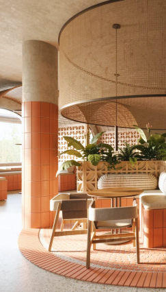
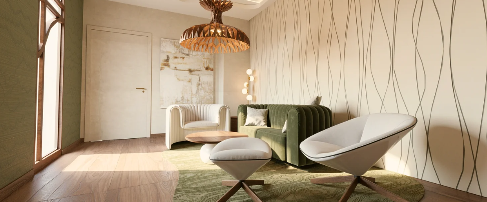
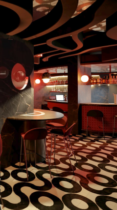
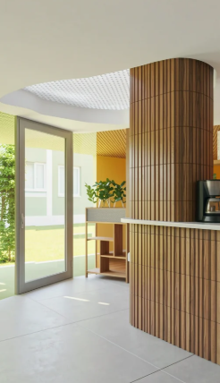
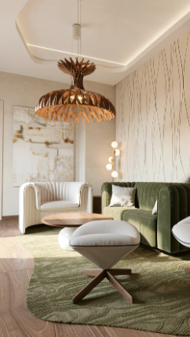

ESPACIO · MATERIA · LUZ
Espacios para
vivir mejor.
Una mirada sensible al interiorismo.
El equilibrio entre lo que un espacio es
y lo que puede llegar a ser.
PORTAFOLIO / CV

01 — PORTAFOLIO
Habitar con intención.
Cuatro proyectos, cuatro formas de
entender el espacio.

Bar Kusama

Vestíbulo Casal Barrio Verdun

Suite en hotel de lujo
02 — PERFIL & CURRÍCULUM
Una mirada propia.
Un espacio posible.
Marina Serantes Casals
Diseñadora de interiores
Diseñadora con formación en Artes Plásticas y Diseño de interiores, especializada en Amueblamiento. Entiendo el diseño como una herramienta para construir significado, generar emociones y conectar función y emoción en un mismo proyecto.
Experiencia profesional
Tezenis · Sales assistant
Barcelona · Mayo–agosto 2026. Atención en tienda y probador, gestión de almacén y producto.Inditex · Sales assistant
Barcelona · Enero–abril 2026. Oysho y Zara Home: atención al cliente, caja, almacén y gestión de paquetes.Retablo Interiors · Prácticas
Barcelona · Abril–junio 2025. Planos de mobiliario y visitas de obra para la reforma de una vivienda.Centro Cívico · Proyecto de interiorismo
Barcelona · Enero–mayo 2025. Reforma del vestíbulo: distribución, mobiliario y renderización 3D.José Rivero · Escaparatismo
Barcelona · Septiembre–diciembre 2024. Diseño e implementación de dos escaparates de Navidad.Formación
Deià Escola d’Art i Disseny · 2023–2025
Técnica Superior de Artes Plásticas y Diseño en Amueblamiento. Perfil de interiorismo y mueble.Escola d’Art i Disseny Llotja · 2021–2023
Bachillerato artístico y selectividad.Premios y reconocimientos
TFG ganador · Deià Escola d’Art i Disseny
10 de junio de 2026Proyecto ganador · Premio Extraordinario de Enseñanzas Artísticas Profesionales en Diseño de Interiores
3 de junio de 2026Proyecto finalista · Premios CODIC
13 de noviembre de 2025Herramientas y habilidades
AutoCAD · Revit · SketchUp · Lumion · InDesign · Photoshop · Lightroom · Office 365
Dibujo artístico y técnico. Responsabilidad, capacidad resolutiva y trabajo en equipo.Idiomas
Castellano y catalán · Nativos
Inglés avanzado · Francés medio03 — UNA FORMA DE ENTENDER EL ESPACIO
Del primer trazo
al último detalle.
- 01
Escuchar
Entender cómo se vive un lugar y qué necesita quien lo habita.
- 02
Imaginar
Explorar distribuciones, luz y materiales como un conjunto.
- 03
Dar forma
Traducir la idea en una propuesta coherente y funcional.
04 — CONTACTO
Todo empieza
con una conversación.
Madrid, España · +34 684 223 155
serantescasalsm@gmail.com